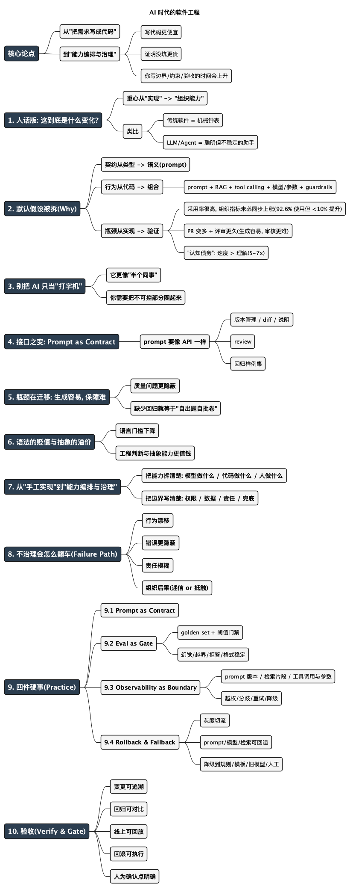

AI 时代的软件工程
Posted on Sat 28 February 2026 in Tech
| Abstract | AI 时代的软件工程 |
|---|---|
| Authors | Walter Fan |
| Category | tech note |
| Status | v1.0 |
| Updated | 2026-03-02 |
| License | CC-BY-NC-ND 4.0 |
AI 时代的软件工程
上周 code review, 我看着 PR 的 diff, 脑子里冒出一个很不工程、很不优雅的念头:
这玩意儿像外卖。来得快, 闻着香, 吃到一半才发现——没熟。
更麻烦的是: 我发现了一个危险的繁荣。
团队的 PR 体积变大了, 交付周期缩短了。一眼望去, 代码结构规整, 注释详尽——满满的都是 AI 助手的痕迹。
这不是坏事, 生产力确实提升了。
但你也会隐隐觉得: 我们还在用同一套"人写代码、人审代码"的流程, 去应对一种已经不太一样的生产方式。
还有个更糟的副作用, 很多人没当回事: 所谓"十倍效率", 有时候不只是写代码更快, 也可能是"引入技术债更快"。
AI 生成的代码经常有一种气质: 僵化、啰嗦、看起来面面俱到, 实则漏洞不少。它会把边界条件写满, 注释写满, 但"前瞻性"和"实用性"很难保证, 更别提那种需要你靠经验做取舍的地方。
顺便补个扎心的数据点: 一项覆盖 12.1 万名开发者、450 多家公司的研究里, 92.6% 的开发者至少每月使用一次 AI 编码助手, 约 75% 每周都用一次, 但组织层面的生产力提升不到 10%(93% of Developers Use AI - Productivity Only 10%)。
过去三十年, 软件工程的核心能力绕来绕去就一句话:
把需求转化为代码。
AI 大模型出现之后, 这个基本假设开始松动。问题从来不在于"AI 会不会写代码"——它会, 而且会得越来越多。
真正的问题是:
当机器能参与编写、理解、重构、甚至设计代码时, 软件工程的核心能力, 还等不等于"亲手实现"?
我想给的答案很明确(也很不讨喜):
软件工程的核心正在从"把需求写成代码", 转向"能力编排与治理"。
你写代码的时间会下降; 你定义边界、设计约束、建立验收与回归的时间会飙升。你不是变轻松了, 你只是从"码农"转职成"系统的监工与审计员"。
1. 人话版: 这到底是什么变化?
把它说成人话:
- 过去你写系统, 主要在"实现": 功能怎么做, 接口怎么写, 性能怎么榨。
- 现在你写系统, 越来越多在"组织能力": 哪些能力由模型生成, 哪些由确定性代码完成, 哪些必须人工确认, 失败怎么兜底, 行为怎么回归。
一个类比更直观:
- 传统软件像"机械钟表": 齿轮咬合, 按图纸走, 误差可控。
- LLM/Agent 系统更像"雇了个聪明但不稳定的助手": 你给它目标, 它会自己找路, 有时很神, 有时把你带沟里。
所以工程的重点自然变了:
- 你不再把"每一颗齿轮"都亲手打磨
- 你开始关心: 这位助手能做什么、不能做什么、做错了怎么发现、怎么纠正、怎么追责
这就是我说的"能力编排与治理"。
2. 传统默认假设 vs AI 新假设
你可以把软件工程看成一组"默认假设"的集合。AI 时代最关键的变化, 是这些假设被逐条拆掉。
假设 A: 接口契约主要写在类型系统里
传统接口(HTTP/gRPC/函数签名)大多有共同特点:
- 输入输出明确
- 类型可校验
- 行为可预测(至少你假装可预测)
- 可测试、可回归
AI 系统里出现了一类新接口:
Prompt(更准确叫"语义接口")
Prompt 不只是文本, 它承担了指令定义、输出约束、推理引导、风险边界等职责。你会发现一些团队已经开始:
- 给 prompt 做版本管理
- 给 prompt 做 review
- 给 prompt 做回归测试
因为改一个词, 行为就可能偏航——契约不再主要写在类型里, 而写在语义里。
安全侧也在用类似视角建立风险清单, 比如 OWASP 的 LLM Top 10 里把 Prompt Injection 放在高优先级(见 OWASP LLM Top 10)。
假设 B: 系统行为主要由代码确定
传统系统里, 代码是行为的唯一来源; 配置只是调参。
LLM/Agent 系统里, "行为来源"变多了:
- prompt(语义契约)
- 检索到的上下文(RAG)
- 工具清单与权限(tool calling)
- 模型版本与参数(temperature、system prompt 等)
- 运行时策略(guardrails、拒答、过滤)
行为变成"组合出来的", 这就要求你像管理依赖一样管理这些组件: 版本、变更、回滚、审计。
假设 C: 生产力的瓶颈在实现
当 20 行自然语言能换来 200 行"看起来还行"的代码时, 瓶颈不再是打字速度, 而是:
- 你能否准确表达意图
- 你是否知道边界在哪里
- 你是否能识别风险与异常
- 你是否能设计验证机制(否则你只是更快地生成未知风险)
一句不好听但实用的话:
生成代码的成本降了, 证明它没坑的成本没降, 甚至更高。
3. 别把 AI 只当"打字机"
很多团队对 AI 的引入, 只停在 Copilot 阶段: 补全代码分支、生成单元测试、写注释、做重构建议。它确实像"增强型 IDE", 省了不少体力活。
但现实是, 模型正在越过这条线。当你开始引入 RAG(检索增强生成), 让大模型直接调用内部 API(tool calling), 甚至让 Agent 自行拆解复杂任务时, AI 就不再是"增强型打字机"。
它变成了一个参与系统运行时行为的、非确定性的智能体。
简单区分一下:
- Copilot 更像"智能输入法": 你在写, 它帮你补
- Agent 更像"实习生": 你下任务, 它去做
两者对工程流程的影响完全不同。前者改变的是速度, 后者改变的是"生产方式"。
4. 接口之变: Prompt as Contract
传统软件的接口是什么? HTTP API、gRPC、CLI、函数签名。
这些接口有个共同特点: 明确输入输出、类型可校验、行为可预测、可测试、可回归。
而在 AI 系统中, 一个新的接口出现了:
Prompt。
Prompt 不再只是文本。它实际上承担了以下职责: 指令定义、行为约束、输出格式规范、推理引导、风险边界。
它本质上是一个语义接口。
很多开发者依然把 prompt 当作一串字符串去硬编码。直到有一天, 某个人把 prompt 里的"请简明扼要"改成了"请详细说明", 大模型输出的 JSON 格式彻底跑偏, 下游服务一片红。
这时你才会意识到: prompt 不是字符串。它是指令定义, 是行为约束, 也是风险控制边界。
当团队开始版本化 prompt、review prompt、回归测试 prompt 时, 事情就已经变了。改一个词, 行为就可能偏航——契约已经不在类型里, 而在语义里。
我们正在从：
Code as Contract
转向：
Prompt as Contract
这意味着:
- 行为定义从类型系统迁移到语义系统
- 验证从编译期迁移到运行期评估
- 接口从确定性协议转向概率性约束
这不是工具变化, 这是接口模型变化。
5. 瓶颈在迁移——生成容易, 保障难
AI 让写代码变快了, 但组织层面的效率未必跟着涨, 因为瓶颈迁移到了下游: 审查、调试、验证、回归。
还有个更直观的现象: PR 变多了, 但 review 变慢了。有团队的统计显示, PR 数量接近翻倍(+98%), 审查时间也跟着大幅上升(+91%)(Why AI coding tools shift the real bottleneck to review)。
一句不好听但实用的话, 再说一遍:
生成代码的成本降了, 证明它没坑的成本没降, 甚至更高。
这就好比一个建筑工地——砌砖的速度从人工砌墙变成了 3D 打印, 一天就能"打"出一栋楼。但质检员还是两条腿两只眼, 验收能力没变。打得越快, 验不过来的风险越大。
所以这几年你会感觉到一种奇怪的状态: PR 变多了, 讨论变热闹了, 但你心里更不踏实了。不是因为大家更懒, 是因为"理解"和"生产"这两件事被解耦了。
6. 语法的贬值与抽象的溢价
在传统工程体系中，技术成长路径通常是：
语法熟练 → 框架掌握 → 架构理解 → 系统设计
而 AI 时代，前两个阶段的壁垒迅速降低。AI 可以写 CRUD、生成 REST API、编写基础单元测试、甚至生成简单架构模板。
这导致一个直接后果：
语法能力的稀缺性下降。
AI 写得快, 不代表它写得对, 更不代表它写得"合适"。真正拉开差距的, 反而是老工程师最不性感的那几样东西: 判断力、边界感、风险嗅觉。
你得知道 AI 该用在什么地方, 哪些地方必须人工兜底; 还得能一眼看出那种"看起来没毛病, 但会出事"的代码味道。
真正稀缺的能力开始转向:
- 意图的精确表达能力——你到底想让系统干什么, 以及不该干什么
- 系统抽象能力——把复杂问题分解为可管理的模块
- 边界定义能力——知道系统在哪里"切一刀"
- 约束设计能力——定义 AI 不能做什么, 比定义它能做什么更重要
- 行为建模能力——在非确定性环境中预测系统行为
- 风险评估能力——识别"看起来能跑但会出事"的隐患
如果说过去的工程能力核心是：
How to implement?
那么现在的核心问题变成：
What should be implemented, and under what constraints?
这是一种认知层级的上移。
7. 从"手工实现"到"能力编排与治理"
我们终于来到本文的核心论点。
在传统工程中，系统的"能力"是通过代码逐行堆叠起来的。工程师亲自实现每一个函数，手动控制系统行为，精确控制每一个分支。
而在 AI 时代，一个新的可能性出现：我们不再直接实现所有能力。
我们开始：
- 设计能力接口
- 编排能力调用
- 定义行为约束
- 建立验证循环
- 监控智能体行为
软件开发正在从：
手工实现(Manual Implementation)
转向：
能力编排与治理(Capability Orchestration & Governance)
随着 AI 开始"自己干活", 团队必然从亲自执行任务, 转向编排任务: 你给目标、给边界、给验收, 然后盯着它别翻车。
这不是对工程的削弱，而是抽象层级的提升。
就像当年从汇编走向高级语言，从单体走向微服务，从物理机走向云计算。工程师从"砌砖"变成"画图纸 + 验收"——砖可以交给机器砌，但图纸和验收标准你得握在手里。
每一次跃迁，本质上都是：
工程师从更高层级控制系统。
现在，AI 正在成为新的能力模块。工程师的角色正在转变为：
- 能力设计者——定义系统应该具备什么能力
- 行为约束设计者——定义 AI 不能做什么
- 智能体调度者——编排多个 Agent 协作完成任务
- 系统治理者——确保整个系统可控、可观测、可审计
一句话: 你过去十年积累的架构经验、系统直觉、排查能力, 不但没有贬值, 反而更值钱了。因为当"写"变便宜, 稀缺的就变成了"让它安全地跑起来"。
8. 不治理会怎么翻车(Failure Path)
"能力编排与治理"听起来像管理学废话。那就用一条很工程的"翻车链路"把它钉死。
你在团队里引入一个"写代码 + 改代码 + 生成单测"的 Agent(或者一堆 Copilot 生成的 patch), 你没有做治理, 于是:
- 行为漂移: prompt 改了几句、模型升级了一个版本, 输出风格变了。以前是"稳妥保守", 现在突然"大胆重构", PR 里开始出现大改动。
- 错误隐藏更深: AI 特别擅长写"看起来合理"的错误。它不会像新人那样写出一眼假的代码, 它会写出"需要你认真读 10 分钟才发现错"的代码。
- 验证缺失: 单测是它写的, 测试数据也是它选的。结果就是: 它给自己出题、自己批卷、自己宣布优秀。
- 责任模糊: 线上出事故, 大家开始进行一种古老而优雅的甩锅艺术:
- "这段不是我写的, 是 AI 建议的"
- "我只 approve 了个大概"
- "当时赶时间"
- 组织后果: 团队开始对 AI 要么迷信要么抵触。产能变得不可预测, 质量开始靠运气。
你会发现, 翻车不是因为 AI 很蠢, 而是因为:
你用"管理确定性代码"的方式, 在管理一个"概率性行为系统"。
9. 你可以怎么做(Practice): 把"治理"落成四件硬事
"能力编排与治理"听起来很大, 其实可以拆成四个非常具体、非常工程的动作: 契约、门禁、观测、回滚。
9.1 Prompt as Contract: 把 prompt 当接口对待
你至少要做到:
- prompt 版本化(改动要有 diff, 要有说明)
- prompt review(像审 API 一样审: 输入约束、输出格式、拒答条件)
- prompt 回归(关键样例集: 正常/边界/对抗)
这一步的代价很现实: 你会多出一套"语义接口"的维护成本。 但不做, 你就在赌"每次改词都不出事"。
9.2 Eval as Gate: 没有评估集, 就没有质量
很多团队对 AI 的质量控制停留在"试了一下感觉还行"。
工程化一点: 你需要一个最小可用评估集(golden set), 再配一个门禁:
- 每次 prompt/模型/检索策略变更, 都跑评估
- 设阈值: 达不到就不放行
- 评估维度别只看"答对没", 还要看: 幻觉、越界、拒答、格式稳定性
你甚至可以用现成的评估工具/接口来体系化管理(比如 OpenAI Evals API, 或 Guardrails 的评估工具)。
提示: 别急着追求"完美指标", 先追求"每次变更都能对比"。
9.3 Observability as Boundary: 可观测性是你的安全绳
传统系统的可观测性关注: 延迟、错误率、吞吐、资源。
LLM/Agent 系统还要多看一层"行为可观测性":
- 这次回答/改动使用了哪个 prompt 版本?
- 检索到了哪些文档片段? 引用是什么?
- 调用了哪些工具? 参数是什么? 有没有越权?
- 在哪个决策点发生了分歧/重试/降级?
没有这些, 你 debug 不了; 更要命的是, 你也复盘不了。
9.4 Rollback & Fallback: 把"退路"写在设计里
AI 时代的上线策略要更像 SRE:
- 灰度与切流(别一次性全量)
- 快速回滚(prompt/模型/检索配置都能回退)
- fallback 策略(模型不稳定就降级到规则/模板/旧模型/人工)
你不是追求永远正确, 你是在追求"出问题时能控制损失"(见 Google SRE Book)。
10. 怎么验收你真的做对了(Verify & Gate)
写到这里, 如果你还只能说"我们做了治理", 那基本等于没做。
给你一组可以落地验收的"硬指标"(不需要很精美, 但必须可追踪):
- 变更可追溯: 每次 prompt/模型/检索配置变更, 都能定位到 PR / 版本号 / 发布时间
- 回归可对比: 同一评估集在新旧版本上能做差异报告(哪类问题变好了, 哪类变差了)
- 线上可定位: 线上任意一次异常输出, 都能回放关键上下文(输入、检索片段、工具调用、输出)
- 回滚可执行: 出现事故时, 能在分钟级回退到上一个稳定组合
- 人为确认点明确: 哪些操作必须人工确认(比如花钱、删数据、改配置), 写进流程和代码里
如果你做不到这些, 那你现在的"AI 工程"更像是"把不确定性塞进生产, 然后祈祷"。
本章小结
- AI 没有消灭软件工程, 它只是把工程的重心推上了一层: 从"实现"推向"编排与治理"。
- Prompt 正在变成语义接口; Agent 变成执行单元; 评估与可观测性变成质量边界。
- 生成变便宜, 验证更值钱。你省下的实现时间, 迟早要用来买"门禁、回归、回滚、审计"。
- 还有一笔隐形账: AI 的生成速度远快于人类的理解速度, 有人把这个差距概括为 5-7 倍, 并称之为"认知债务"(Cognitive Debt: AI Coding Agents Outpace Comprehension 5-7x)。
- 真正稀缺的能力不再是语法熟练, 而是: 边界定义、约束设计、验收与复盘。
留个问题给你:
你们团队现在的契约, 主要还写在代码里, 还是已经悄悄迁到 prompt / 配置 / 模型组合里了?
明天就能做的 5 件事(Checklist)
-
列一张清单: 你们系统里有哪些行为已经由 prompt/模型决定?(15 分钟)
写清楚: 位置、负责人、是否版本化、是否有回归样例。 -
把一个关键 prompt 纳入版本管理 + PR review(30 分钟)
规则很简单: 改 prompt 必须有变更说明(为什么改、预期影响、回滚方式)。 -
做一个"最小评估集"(10-30 条样例)(1 小时)
覆盖: 正常输入、边界输入、你最怕的对抗输入。先能跑起来, 再谈扩充。 -
给线上输出打上"行为指纹"(半天)
至少记录: prompt 版本、模型版本、关键参数、检索文档 ID(或 hash)。 -
写下你们的第一条"AI 时代红线"(10 分钟)
例如: 涉及花钱/删数据/改权限的操作, 必须人工确认; Agent 只拿最小权限 token。
适用边界与代价
这套"从实现转向编排与治理"的观点, 不是要你明天就把所有系统改成 Agent。
适合认真对号入座的团队:
- 已经在大量使用 Copilot/LLM 生成代码、测试、文档
- 已经上线了 RAG/Agent 这类"行为会漂移"的能力
- 对质量与合规有要求(ToB、金融、医疗、基础设施相关)
暂时不必过度折腾的场景:
- 纯内部工具, 失败成本很低
- AI 只用来写草稿/摘要, 不直接影响关键决策或生产行为
代价很真实:
- 你会增加"语义契约"的维护工作(prompt、评估集、门禁)
- 你会引入"治理摩擦"(review、审批、灰度)
- 你需要跨职能协作(工程、产品、数据、安全、合规)
这代价本质上是: 你把"线上事故成本"前置成"工程成本"。你愿意付哪一种, 决定了你能走多远。
延伸思考
你们团队现在的契约, 主要还写在代码里, 还是已经悄悄迁到 prompt / 配置 / 模型组合里了?
如果已经迁了一部分, 你们是怎么做版本、回归、回滚和审计的?
扩展阅读
- NIST AI RMF 1.0 (AI 风险管理框架, 适合建立"治理语言")
- OWASP Top 10 for LLM Applications (LLM 应用安全风险清单, 适合做威胁建模)
- OpenAI Evals API Reference (把"评估"做成工程管道的一种方式)
- OpenAI Guardrails Python - Evaluation Tool (评估工具示例)
- Google SRE Book (用 SLO/灰度/回滚思维管理不确定性系统)
- Google SRE Resources (SRE 资源入口)
- 93% of Developers Use AI - Productivity Only 10% (采用率很高, 但组织指标未必同步上涨)
- Why AI coding tools shift the real bottleneck to review (瓶颈从"写"迁移到"审"的一个直观证据)
- Cognitive Debt: AI Coding Agents Outpace Comprehension 5-7x ("认知债务"这个概念的系统阐述)
思维导图
@startmindmap
<style>
mindmapDiagram {
node { BackgroundColor #F5F5F5; RoundCorner 8; Padding 8; FontSize 14 }
:depth(0) { BackgroundColor #2C3E50; FontColor white; FontSize 16; FontStyle bold }
:depth(1) { FontSize 14; FontStyle bold }
:depth(2) { FontSize 13 }
}
</style>
title AI 时代的软件工程
* 核心论点
** 从"把需求写成代码"
** 到"能力编排与治理"
*** 写代码更便宜
*** 证明没坑更贵
*** 你写边界/约束/验收的时间会上升
* 1. 人话版: 这到底是什么变化?
** 重心从"实现" -> "组织能力"
** 类比
*** 传统软件 = 机械钟表
*** LLM/Agent = 聪明但不稳定的助手
* 2. 默认假设被拆(Why)
** 契约从类型 -> 语义(prompt)
** 行为从代码 -> 组合
*** prompt + RAG + tool calling + 模型/参数 + guardrails
** 瓶颈从实现 -> 验证
*** 采用率很高, 组织指标未必同步上涨(92.6% 使用但 <10% 提升)
*** PR 变多 + 评审更久(生成容易, 审核更难)
*** "认知债务": 速度 > 理解(5-7x)
* 3. 别把 AI 只当"打字机"
** 它更像"半个同事"
** 你需要把不可控部分圈起来
* 4. 接口之变: Prompt as Contract
** prompt 要像 API 一样
*** 版本管理 / diff / 说明
*** review
*** 回归样例集
* 5. 瓶颈在迁移: 生成容易, 保障难
** 质量问题更隐蔽
** 缺少回归就等于"自出题自批卷"
* 6. 语法的贬值与抽象的溢价
** 语言门槛下降
** 工程判断与抽象能力更值钱
* 7. 从"手工实现"到"能力编排与治理"
** 把能力拆清楚: 模型做什么 / 代码做什么 / 人做什么
** 把边界写清楚: 权限 / 数据 / 责任 / 兜底
* 8. 不治理会怎么翻车(Failure Path)
** 行为漂移
** 错误更隐蔽
** 责任模糊
** 组织后果(迷信 or 抵触)
* 9. 四件硬事(Practice)
** 9.1 Prompt as Contract
** 9.2 Eval as Gate
*** golden set + 阈值门禁
*** 幻觉/越界/拒答/格式稳定
** 9.3 Observability as Boundary
*** prompt 版本 / 检索片段 / 工具调用与参数
*** 越权/分歧/重试/降级
** 9.4 Rollback & Fallback
*** 灰度切流
*** prompt/模型/检索可回退
*** 降级到规则/模板/旧模型/人工
* 10. 验收(Verify & Gate)
** 变更可追溯
** 回归可对比
** 线上可回放
** 回滚可执行
** 人为确认点明确
@endmindmap

本作品采用知识共享署名-非商业性使用-禁止演绎 4.0 国际许可协议进行许可。